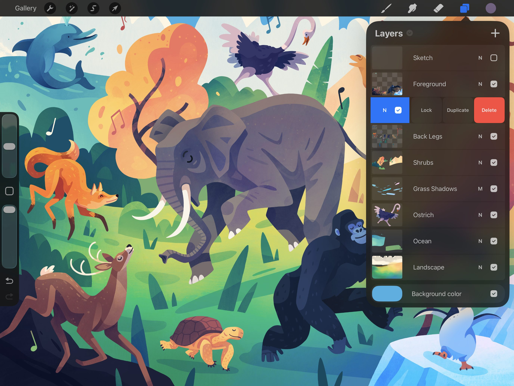
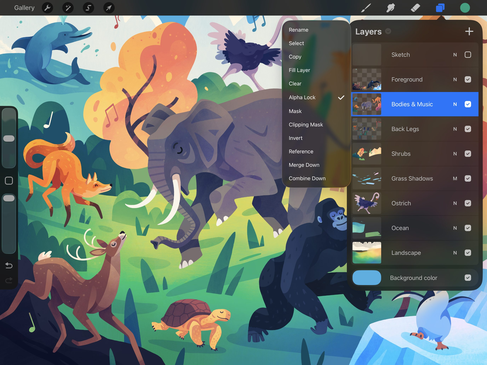
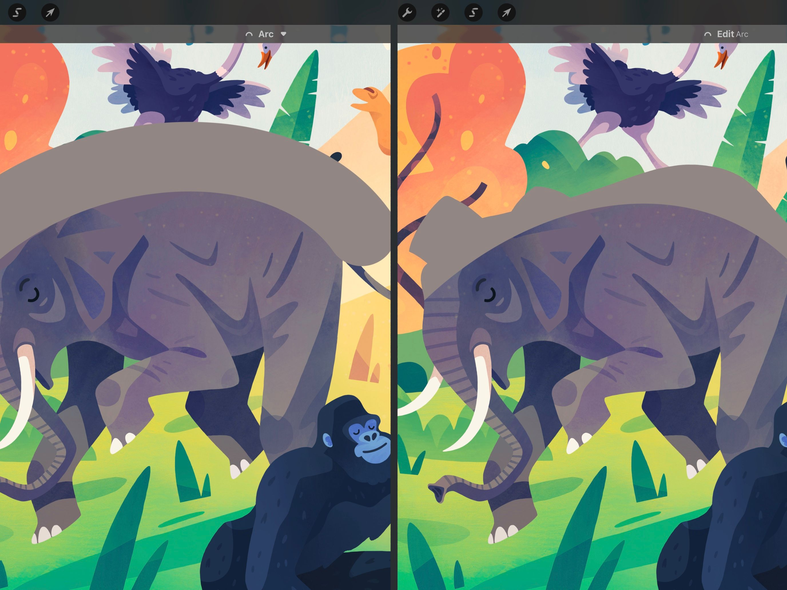
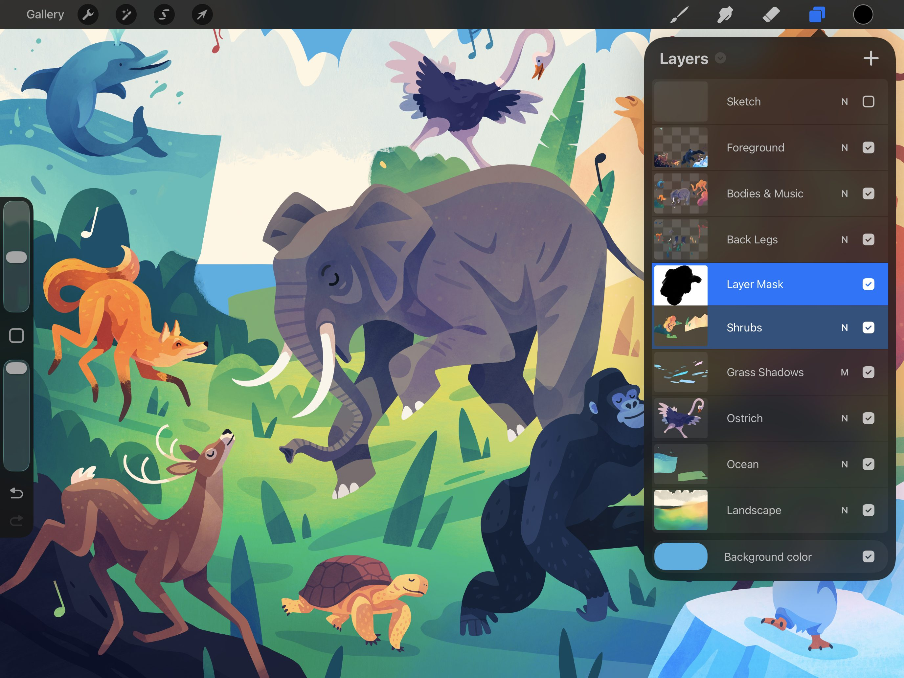

📖 Nội dung bên dưới là bản gốc tiếng Anh (chưa dịch). Ảnh đã cache offline.
Mask
Procreate offers various ways to modify certain areas of content without affecting others. This gives you the freedom to work fast and experiment with confidence.
Layer Locks
While they are not Masks in the digital sense, Locks offer an important related function. A Layer Lock protects a layer from any edits. Alpha Lock protects any part of a layer that is transparent.


Layer Lock
To prevent any accidental changes and edits made to a layer you can lock it. Swipe right-to-left on any layer or Layer Group, then tap Lock.
Locking a Group will lock all layers in that Group. Unlocking any layer in a Group will unlock the entire Group.
When locked a layer or Group will display a small padlock symbol next to the name. You cannot edit, move, cut, paste, transform, or delete a locked layer. It is completely protected.
To unlock a layer or Group for editing, swipe right-to-left and tap Unlock.
Alpha Lock
Activating Alpha Lock on a layer means that you can only change pixels that already exist on the layer. Lay down some content on a layer, then Alpha Lock it; you'll notice you can only change the pixels that you've already committed to the canvas → you cannot create more.

Using this, you can block out a character's silhouette, then freely add color and detail to that character. Alpha Lock lets you work without worrying about painting outside the area.
In the below example, on the left a shading stroke is applied to the top of the elephant layer Alpha Lock disabled. On the right, a shading stroke is applied to the top of the elephant layer with Alpha Lock enabled.

Once you have blocked out the shape you want, tap the layer to bring up the Layer Options menu, then tap Alpha Lock.
Pro Tip
Instantly activate Alpha Lock by swiping left to right with two fingers on any layer.
Active Alpha Lock layers display a checkered background in the thumbnail.
Need to touch up an edge, or add to your existing Alpha shape? Turn the Alpha Lock off, make your changes to the artwork, then switch Alpha Lock back on.
Layer Mask
Masking a layer is great for non-destructive experimentation.

You can modify a Layer Mask to hide or show any part of its parent layer without erasing any content. You can also Lock, Transform, and Copy Masks.
Create
Add a Mask attached to your Primary Layer.
Tap your Primary layer to invoke the Layer Options menu, then tap Mask. Your new Mask will appear attached above the selected layer.
Edit
Edit your Layer Mask by using the Eraser or painting in grayscale.
Layer Masks are edited using grayscale. Erasing or painting in black hides parts of the parent layer, and painting in white reveals parts. Varying shades of gray alter the content with corresponding levels of opacity.
When a Layer Mask is selected as your Primary layer, your Color Panel selections will ignore hue. This ensures you always paint on a Layer Mask in grayscale.
Select
Select the Layer Mask or its parent layer as your Primary for different actions.
When you select a Layer Mask as your Primary layer, you can use Erase or Paint to edit the mask. Selecting the parent layer as your Primary lets you to modify content that sits underneath the mask on that layer.
Selecting either the layer or the mask as the Primary layer will select the other of the pair as a Secondary layer. This allows you to Transform both at once. If you want to Transform the layer or the mask independently, deselect the other item first.
Move
Move a masked layer without affecting your Layer Mask.
Tap and hold on the Layer Mask or its parent layer to pick up both, and drag them elsewhere in your Layers menu. The Layer Mask will remain attached to its parent layer until you merge or delete it.
Delete
Delete or Lock a Layer Mask.
Like any normal layer, swiping left on a Layer Mask reveals the Lock or Delete button.
Layer Mask doesn’t have its own Duplicate button. Duplicating a masked layer will create a copy of both the layer and the mask.
Clipping Mask
Control the visibility of a layer based on the content of another.
When you activate a Clipping Mask, it clips your active layer to the layer underneath it. The shape and visibility of the parent layer below controls the contents and transparency of the clipped layer that sits above it.
If the selected layer is the bottom layer in your Layers panel, the Clipping Mask option is not available.
Learn more about Clipping Masks in the Layer Options Menu section of this handbook.
Create
Turn any layer into a Clipping Mask from the Layer Options menu.
Tap your Primary layer to invoke the Layer Options menu, then tap Clipping Mask. The selected layer will become a Clipping Mask, clipped to the layer below.
If the selected layer is the bottom layer in your Layers panel, the Clipping Mask option is not available.
Transform
Experiment with the shape and form of your Clipping Mask using Transform.
Use the Transform tool to move, scale, or distort the content on your parent layer. This changes which parts of the clipped layer will be visible.
Adjust
Play with color, texture and effects on your clipped layer with Adjustments.
Reimagine the appearance of the content on your clipped layer. Explore the power of Adjustments with filters like Gaussian Blur or Liquify.
Move
Pick up and move a clipped layer to change how the content is affected.
Clipping Masks differ from Layer Masks in that they are independent of the layer they affect. You can pick up and move a Clipping Mask like any normal layer.
When you move a Clipping Mask's layer order, it will clip to the layer below it. Move a clipped layer to the bottom of your Layers Panel, the Clipping Mask function will deactivate. Move a layer below the deactivated Clipping Mask and the Clipping Mask function will reactivate.
Lock, Duplicate, Delete
Control your Clipping Mask with standard layer options.
All the standard Layer Actions and Layer Options are available for Clipping Masks.
Swipe left on a Clipping Mask to reveal buttons for Lock, Duplicate, and Delete.
Deactivate
Toggle Clipping Masks on and off.
To toggle the clipped status of a layer, tap to invoke the Layer Options menu, then tap the Clipping Mask button.
Still have questions?
If you didn't find what you're looking for, explore our video resources on YouTube or contact us directly. We’re always happy to help.